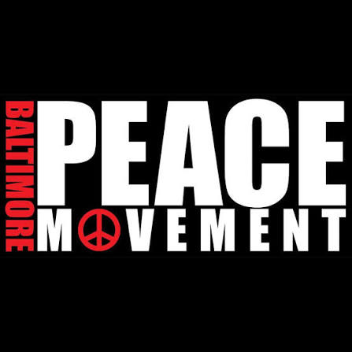

Mission
Advance conflict literacy through practical education, public engagement, community workshops, youth development, and accessible mediation-informed resources.
An Initiative of Harrington Mediation
Building a culture where conflict resolution becomes an everyday life skill rather than a last resort.
Understanding Precedes Resolution.
Most people associate mediation with courts, attorneys, legal paperwork, or formal disputes. Yet people negotiate, listen, compromise, clarify concerns, and work through conflict every day.
The Mediation Stewardship Project exists to make those skills visible, practical, and accessible. It does not seek to train everyone to become a professional mediator. It seeks to help individuals, families, schools, organizations, and communities communicate more constructively before conflict becomes crisis.
Advance conflict literacy through practical education, public engagement, community workshops, youth development, and accessible mediation-informed resources.
Communities where listening, negotiation, perspective-taking, and constructive disagreement are recognized as essential life skills.
Conflict is unavoidable. The way people understand and respond to conflict determines whether relationships are strengthened, damaged, or transformed.
The Mediation Stewardship Project will grow through distinct branches. Each branch has one clear purpose and its own dedicated page.
Explore the project’s purpose, core philosophy, conflict literacy framework, and the idea of the hidden mediator.
Explore the Mission →Practical workshops for schools, nonprofits, businesses, churches, community groups, and professional organizations.
Explore Workshops →Age-appropriate conflict-literacy education for middle schools, high schools, colleges, and youth organizations.
Explore the Youth Initiative →A developing non-emergency resource for people who need help preparing for difficult conversations or finding an appropriate next step.
Learn About the Support Line →Articles, videos, guides, workshop materials, and public reflections that support continued learning.
Explore Resources →Workshops, presentations, public forums, youth programming, and collaborative community events.
View Events →Opportunities for schools, nonprofits, churches, businesses, civic leaders, and peacebuilding organizations to collaborate.
Partner With the Project →Help expand workshops, youth programming, educational resources, events, and future conflict-support services.
Support the Project →Receive updates, share an idea, request a workshop, volunteer, or express interest in future project development.
Stay Connected →
The Mediation Stewardship Project supports the broader vision of a more peaceful Baltimore by promoting practical communication and conflict-resolution skills for individuals, families, schools, neighborhoods, and organizations.
The project is an independent Harrington Mediation initiative that welcomes opportunities to contribute educational programming alongside community peacebuilding efforts, including the Baltimore Peace Movement.
Bring a workshop to your school, organization, church, business, or community. Explore a partnership, support future programming, or join the project’s interest list.